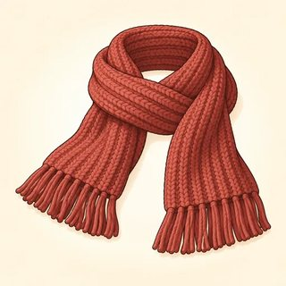
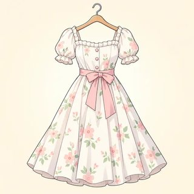
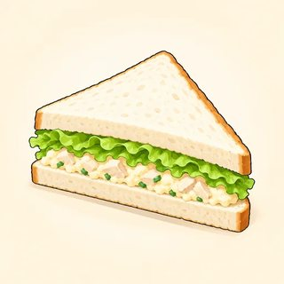
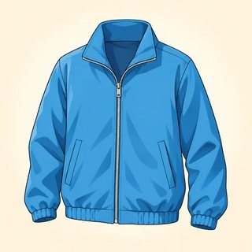

Hi Maria,
How are you? I'm fine. I'm in my new flat! It's small, but it's nice. There's a big window in the living room, and my sofa is next to the window.
I usually get up at seven. I work in a café from Monday to Friday. I like my job, but I hate getting up early!
On Saturday I'm going to visit my sister. She's got a new baby, a girl! Her name is Sofia.
Would you like to have lunch on Sunday? Let's meet at one o'clock.
Love,
Lina
English Foundations (A1) · Assessment · Class 24
Final Test — A1 Exit Check
The end-of-course check on all eight modules, taken on the last day, which is also a celebration. It shows each learner what they can now do in English and gives you the evidence for the next step: Everyday English (A2), or another round of A1 with more support. It is never a pass/fail verdict on a person.
Frame it as "show what you can do"
By Class 24 your learners have met you 23 times. Use that trust: "Today you show me your English. Twelve weeks ago: hello. Today: a whole café, a doctor, your week!" Do every example item together, keep the room warm and unhurried, and plan the celebration so it happens whatever the scores are. Every learner gets a certificate of attendance. The test decides the next class, not who gets to celebrate.
Running Class 24 (90 min)
| Stage | Time | Interaction | Procedure |
|---|---|---|---|
| Welcome & set-up | 5 min | T–S | Greet everyone. Review the icons on the board. Papers go out face down, and learners write their names. |
| Part 1 · Listening | 15 min | T–S | Whole class. Read each script on the teacher pages twice. Do the example items first. |
| Parts 2–5 · written | 45 min | S | Individual work. Interviews run at the same time at a side table (or in the hallway). Call learners one by one for about 5 minutes each, which is 8–9 learners. If a volunteer or co-teacher is free, they supervise the room. If not, sit where you can see everyone. |
| Break | 5 min | — | Collect papers. Set out snacks if your program allows. |
| Remaining interviews + celebration | 20 min | S–S · T–S | Finish the remaining interviews while the class makes an "I can…" wall: each learner writes (or dictates) three things they can do now on sticky notes. Then certificates, one sentence each ("I can…"), a class photo if everyone agrees, and how to join Everyday English (A2). For a large class, start interviews in the second half of Class 23, during the review project. |
You need
- One learner paper each (the middle section of this pack), in color if possible
- Teacher pages: listening scripts, the interview script, the picture prompts (cut or show on screen), role-play cards, and one interview grid per learner
- The key and rubrics:
assessment/assessment-key.html - Certificates, sticky notes, and a timer
What each part checks
- Listening /15: times, dates, prices; key words; a café conversation
- Vocabulary /15: food, home, jobs, clothes (pictures) + odd one out
- Grammar /20: one item for each main structure in Modules 1–8
- Reading /15: a friend's email + a café menu
- Writing /20: a form + 6 sentences about your week
- Speaking /15: an individual interview with a role-play
Literacy-adapted version
Same paper, different delivery. Read all instructions and items aloud, enlarge the paper, and give extra time or split it over Classes 23 and 24. Part 2: accept pointing or copying from the word bank. Part 3: read both choices aloud. Part 4: read the email and menu aloud and ask the questions orally (the menu prices can be pointed to). Part 5A: the learner copies details from a card. Part 5B: the learner says their six sentences while you scribe, and you score Range and Accuracy from what they say. Mark the paper "Adapted". For these learners, the interview and listening are the main evidence for placement. The key explains how to recommend A2 together with literacy support instead of holding someone back for reading and writing alone.
Real or new identity, always
The form, the interview, and the "my week" writing all invite personal details. Say before you start: "Real or new, no problem." New-identity cards from the progress test work here too. Never ask follow-up questions about home country, family members who are absent, or immigration status.
English Foundations (A1) · Final Test
Look What I Can Do! 🌟
Name:
Date:
Class:
Take your time. It's OK to ask: "Can you repeat, please?" 🙂
👂
Part 1 · Listening
___ / 15👂⭕A. Listen. Circle the time, day, date, or price.
07:0011:007:30
13:303:152:30
23 May13 May30 May
3TuesdayThursdaySaturday
4$12.50$20.50$12.15
57:458:158:45
👂✔️B. Listen. Tick ✔️ the picture.
6


7


8


9


10



👂⭕C. Listen. At the café. Circle.
11She wants … a teaa coffeea juice
12With … milksugarwater
13A … sandwich cheesechickenegg
14Eat inTake away
15How much? $6.50$16.50$6.15
✏️
Part 2 · Words
___ / 15📖✏️A. Look. Write the word. Use the words in the box.
trousersfridgecaketeacherbananabootslampdrivercheesejacketchefsandwich
1

2

3

4

5

6

7
8
9

10

11

12

⭕B. One word is different. Circle it.
0redblueapplegreen
13MondayFridayJulySunday
14shirtdresssocksbread
15motherunclekitchensister
⭕
Part 3 · Grammar
___ / 20📖⭕Circle the right word.
0She amisare my friend.
1We amisare from Korea.
2Is that aan umbrella?
3This is my brotherbrother's car.
4He get upgets up at seven o'clock.
5DoDoes she like coffee?
6There isare a sofa in the living room.
7I can't driveto drivedriving.
8Shh! The baby sleepsis sleeping.
9I have two childchildschildren.
10She has a red bagbag redreds bag.
11The keys are inat the bag.
12HaveHasDo you got a pen?
13He havehas got a beard.
14I am nevernever am late.
15I love cookcooking.
16My birthday is inonat June.
17Next week I am going togoing to visit my family.
18Is there someany bread?
19How muchmany eggs do we need?
20You have a cold. You shouldshould to rest.
📖
Part 4 · Reading
___ / 15📖A. Read Lina's email.
⭕Yes or No? Circle.
1Lina's flat is big.YesNo
2The sofa is next to the window.YesNo
3Lina works in a shop.YesNo
4Lina works on Saturday.YesNo
5Lina likes her job.YesNo
6Lina's sister has a baby girl.YesNo
7Lina is going to visit her sister on Sunday.YesNo
8Lina invites Maria to lunch.YesNo
📖B. Read the menu.
☕ Sunny Café · Menu
| Coffee | $2.50 |
| Tea | $2.00 |
| Orange juice | $3.00 |
| Bottle of water | $1.50 |
| Cheese sandwich | $5.50 |
| Chicken salad | $7.00 |
| Chocolate cake | $3.50 |
9How much is a tea?
10How much is the chicken salad?
11Is there any fish on the menu?YesNo
12Is there any juice on the menu?YesNo
13How much is a bottle of water?
14A coffee and a chocolate cake. How much is that altogether?
15You are at Sunny Café. Write your order: I'd like , please.
✏️
Part 5 · Writing
___ / 20✏️A. Write your information. Real or new, no problem. 🙂
| First name | |
|---|---|
| Last name | |
| Country | |
| Nationality | |
| Phone number | |
| Birthday (day + month) | |
| Job |
✏️B. My week. Write 6 sentences about you.
1 · Every day I …
2 · I usually / sometimes / never …
3 · I love / like / don't like … -ing
4 · I can … / I can't …
5 · In my home there is / there are …
6 · Next week I'm going to …
1
2
3
4
5
6
Finished! You did it. 🎉 Check your answers. ✔️
| For the teacher | 1 Listening | 2 Words | 3 Grammar | 4 Reading | 5 Writing | Written | Speaking | Total |
|---|---|---|---|---|---|---|---|---|
| Score | /15 | /15 | /20 | /15 | /20 | /85 | /15 | /100 |
Part 1 · Listening Scripts
Read each item twice, clearly, and pause about 10 seconds. Say the number first. Read Part C as a dialogue: change your voice or stand in a different place for each speaker, or read it with a colleague.
A · Time, day, date, price
Example, number zero: I get up at seven o'clock. (Show the circle on 7:00.)
Number 1: What time is it? It's half past three.
Number 2: My birthday is on the third of May.
Number 3: The English class is on Tuesday.
Number 4: That's twelve dollars fifty, please.
Number 5: The bus is at quarter to eight.
Number 1: What time is it? It's half past three.
Number 2: My birthday is on the third of May.
Number 3: The English class is on Tuesday.
Number 4: That's twelve dollars fifty, please.
Number 5: The bus is at quarter to eight.
B · Tick the picture
Number 6: It's raining. Take an umbrella.
Number 7: Can I have a tea, please?
Number 8: I don't feel well. My foot hurts.
Number 9: She's a nurse. She works in a hospital.
Number 10: It's cold today. Wear a coat.
Number 7: Can I have a tea, please?
Number 8: I don't feel well. My foot hurts.
Number 9: She's a nurse. She works in a hospital.
Number 10: It's cold today. Wear a coat.
C · At the café (read the whole dialogue twice, then give 1 minute)
Server: Good morning! What can I get you?
Woman: Hello. I'd like a coffee, please. With milk.
Server: Sure. Would you like anything else?
Woman: Yes. Can I have a cheese sandwich, please?
Server: Of course. To eat in or take away?
Woman: Take away, please. How much is that?
Server: That's six dollars fifty.
Woman: Here you are. Thank you!
Individual Speaking Interview · ~5 minutes
Sit beside the learner, not across a desk, with the grid on your lap. Speak at a slow, natural pace. Ask the core question first. If there's no answer after about 5 seconds, use the support version (a choice question or a gesture). If the answer is easy, add the stretch question. Don't correct during the interview. Note one strength and one next step instead.
1
Hello & about you
~1 minHello! How are you today?
What's your name? How do you spell your last name?
Where are you from? · What's your phone number? (real or new)
Support: "Are you from … or …?" · Stretch: "What's your email?" (listen for at and dot)
2
Home & routine
~1 minTell me about your home. How many rooms are there?
What time do you get up? What do you do in the evening?
How often do you cook?
Support: "Do you get up at six or at seven?" · "Is there a kitchen? A garden?" · Stretch: "Tell me about your friend's day." (listen for he/she -s)
3
Pictures
~1 minShow the picture prompts below, one at a time.
(coat) What's this? What color is it? When do you wear a coat?
(sunny) What's the weather like? What do you wear?
(doctor) Who is this? Where does she work?
Support: point and ask "Is it a coat or a dress?" · Stretch: "What are you wearing today?" (present continuous)
4
Free time & plans
~1 minWhat do you like doing in your free time? Can you swim? Can you drive?
What are you going to do next weekend?
Support: "Do you like cooking? Dancing?" · "Are you going to visit your family?" · Stretch: "When is your birthday? What are you going to do?"
5
Role-play + your questions
~1 minChoose one role-play. You play the other person. Then invite two questions.
(Café, using the menu from Part 4B) Hi! What can I get you? … Anything else? … To eat in or take away? … That's … dollars.
(Doctor, with a problem card) Good morning. Come in and sit down. What's the matter? … How do you feel? … You should rest and drink water.
Now you ask me two questions. Anything!
Picture prompts (show or cut out)


Doctor role-play problem cards (cut)
Problem 1
🤕 I've got a headache.
You feel tired.
Problem 2
😷 I've got a sore throat.
You've got a temperature.
Problem 3
🦶 My foot hurts.
You can't walk to work.
Problem 4
🤢 My stomach hurts.
You feel sick.
Interview Scoring Grid
Score each criterion 0–3: 0 = no response · 1 = Not yet A1 · 2 = A1 · 3 = A1+ (strong). Descriptors are in the assessment key. Total /15. Print one per learner.
Learner: ______________________ Date: __________ Role-play: ☐ Café ☐ Doctor ☐ Adapted
| Criterion | What to listen for | Score (0–3) |
|---|---|---|
| Task & social language | Answers every stage; greets; polite café/doctor phrases (I'd like…, please, thank you) | |
| Range (words) | Words for home, routine, food, clothes, weather, jobs, body, plans | |
| Accuracy (grammar) | be; present simple + he/she -s; can; there is/are; like + -ing; going to; I've got | |
| Interaction | Asks 2 questions; asks for repetition; keeps the role-play going | |
| Pronunciation & fluency | Understandable to a sympathetic listener; numbers, times, and prices clear | |
| Total /15 · Went well: ____________________ · Next step: ____________________ | ||
After the test
Score with the key and put written + speaking on the placement summary. Tell each learner their next step privately and kindly before they leave, or at a short one-to-one in the following week. Never read scores aloud. The key's "grade to outcome" table shows who is ready for Everyday English (A2), who goes on with a review plan, and who should repeat A1 with support.
Ray de la Paz© 2026 Ray de la Paz · English Foundations (A1 Beginner)
Assessment · Final Test · v1.0